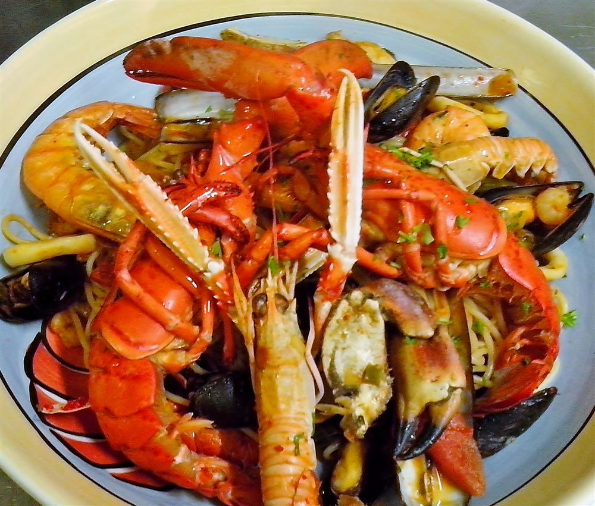
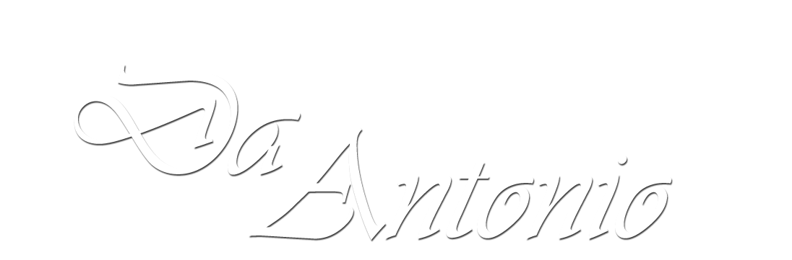
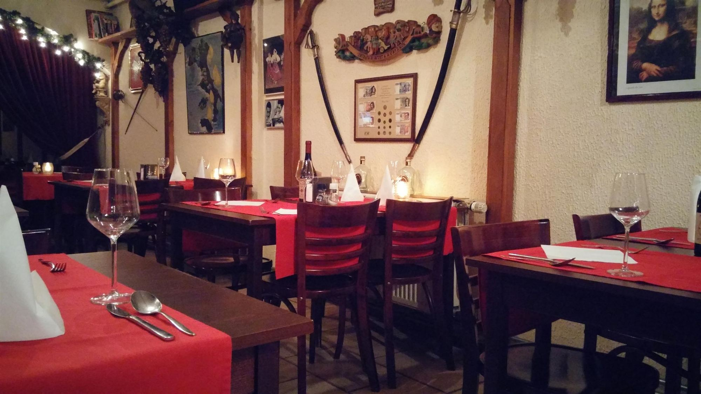
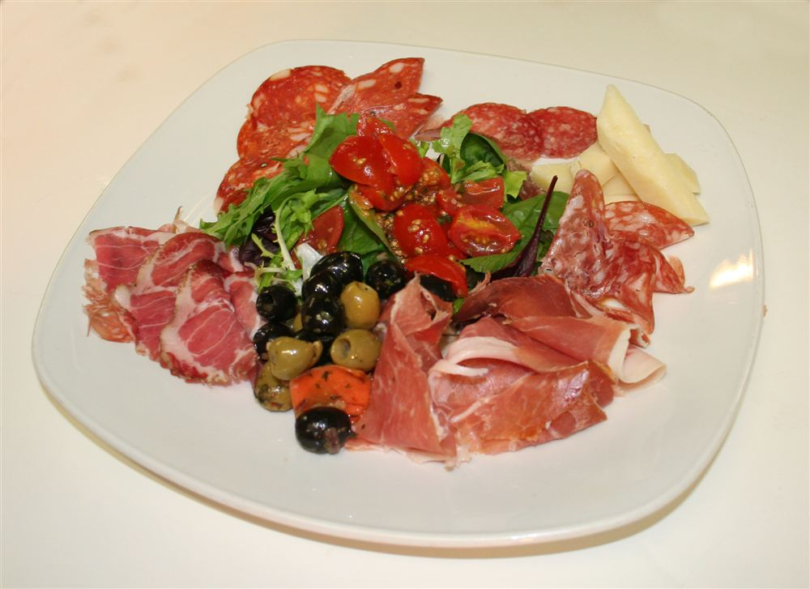
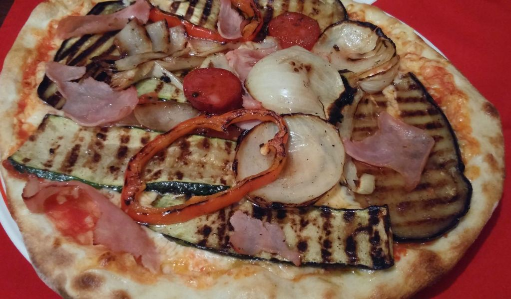
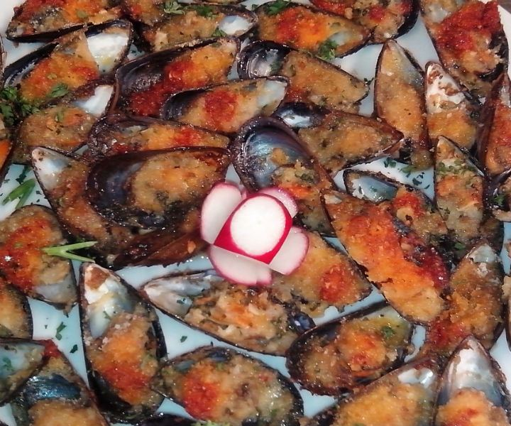
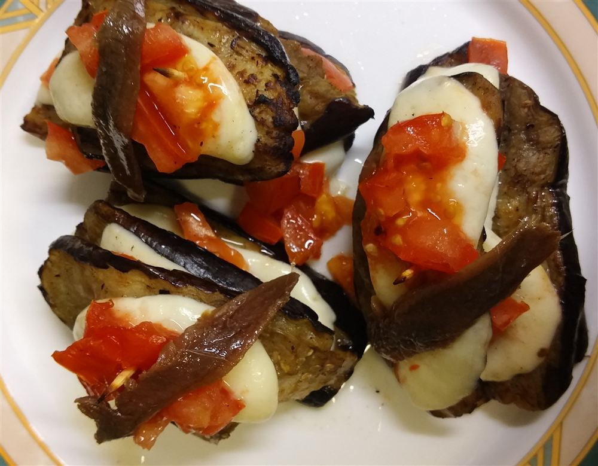

Pasta
Elke dag maken wij vers, met de hand, het pastadeeg. Van de klassieke bolognese tot pasta met schelpdieren of kreeft.

0412 655 072
Ristorante Pizzeria in Oss
Entri come amici, vada come famiglia.
Kom binnen als vriend, ga weg als familie.
Dinsdag t/m zondag 16:30 tot 22:30
Maandag gesloten, behalve op feestdagen
Heuvel 22B Oss
Da Antonio is al jarenlang dé plek in Oss om te komen genieten van de lekkerste Italiaanse specialiteiten. Laat uzelf verrassen door onze uitgebreide menukaart met de meest originele Italiaanse gerechten.
Onze ervaren keukenbrigade heeft de Italiaanse keuken in haar bloed zitten, en dat kunt u proeven. Ons personeel staat met een gezonde dosis passie en enthousiasme voor u klaar. In een ongedwongen, Italiaanse sfeer geniet u van onze specialiteiten.
“Hier kom ik al enkele jaren met veel plezier, valt nooit tegen, altijd lekker eten en leuke bediening en sfeer. Veel variatie en keuzes, zeker een aanrader!”
Een gast van Da Antonio


Elke dag maken wij vers, met de hand, het pastadeeg. Van de klassieke bolognese tot pasta met schelpdieren of kreeft.

Al onze pizza's zijn handgemaakt, van het deeg tot de topping. Een ruime keuze uit traditionele en vegetarische pizza's.

Onze visgerechten worden met de grootste zorg door de chef bereid, met dagverse producten en een creatieve twist.

| Maandag | Gesloten, behalve op feestdagen |
|---|---|
| Dinsdag | 16:30 – 22:30 |
| Woensdag | 16:30 – 22:30 |
| Donderdag | 16:30 – 22:30 |
| Vrijdag | 16:30 – 22:30 |
| Zaterdag | 16:30 – 22:30 |
| Zondag | 16:30 – 22:30 |
Wilt u ons team komen versterken? Bel naar 0412 655 072 voor meer informatie.
Reserveer telefonisch of stuur ons een bericht. Wij zien u graag bij Da Antonio.
Uw mening telt. Of uw bezoek nu goed of minder goed was, wij hechten veel waarde aan uw mening en gebruiken die om ons restaurant steeds beter te maken.
Mail ons uw ervaring